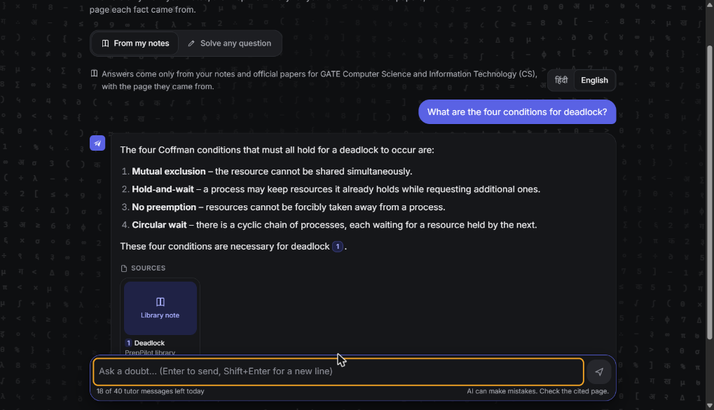
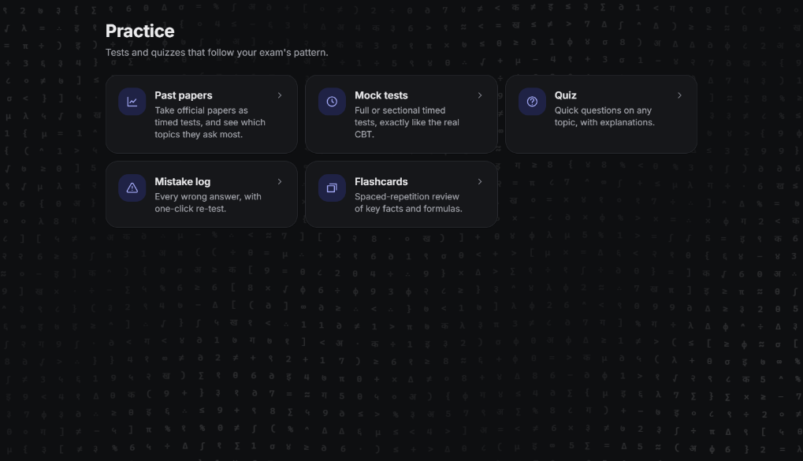

For Indian competitive exams
Study from official sources, in Hindi or English.
PrepPilot brings past papers, notes, mock tests and a study plan into one calm place. Ask a doubt and the answer shows the page it came from. If the notes don't cover it, it says so instead of guessing.
Runs on a free server, so the first visit can take up to a minute to wake.
- 15
- official GATE CS and DA papers, 2019–2026
- 19
- subject notes books, 30+ pages each
- 975
- official questions, every one explained
- 2
- languages, Hindi and English
Click anywhere on the page. The maths ripples.
Ask
Answers you can check
The tutor answers only from your notes, the shared library and official papers. Pick a question to see what happens, then tap the source.
Saved sample answers. The live app writes them in real time.
Mock test
Practise on the real exam screen
A timer, a question palette, mark for review and negative marking, the same way the computer-based exam works. Try this short test.
Sample questions written for this page. The app uses full official papers.
Past papers
See where the marks really are
PrepPilot tags every past-paper question by topic, so you can decide what to study first. This chart uses the real numbers from 12 GATE CS papers, 2019 to 2026.
Marks out of 100 per paper. In years with two sessions, the two papers are averaged.
Everything in one place
Built for the whole preparation


How it works
What happens behind the page
Tap a part to see what it does.